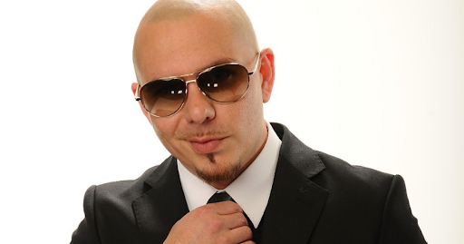

Pitbull is the stage name of Armando Christian Pérez, a Cuban-American rapper, singer, and record producer known for his energetic, global music that blends pop, hip hop, and Latin influences. Born and raised in Miami, he began his career in the local Latin hip hop scene before achieving international pop stardom with hits like "Feel This Moment" and "Timber". A key part of his global appeal is his ability to rap in both English and Spanish, merging different worlds and connecting with a wide variety of fans worldwide.
Throughout his career, Pitbull has maintained a distinct image, often sporting sharp suits and a shaved head, which he views as a symbol of his personal and musical evolution from his street roots to global success. His music frequently references his Miami origins, especially the 305 area code, and he has successfully leveraged the rise of music streaming to promote Spanish-language music globally.
Pitbull is also known for his energetic and motivational persona, collaborating with a diverse range of international artists and releasing music in both English and Spanish. He has released multiple studio albums, including M.I.A.M.I. in 2004 and Global Warming in 2012, and his 2015 Spanish-language album, Dale, won a Grammy. His work extends beyond music, including a famous performance at the 2014 FIFA World Cup opening ceremony.
If you want to find more information about Pitbull) or if you want buy a ticket for his concerts